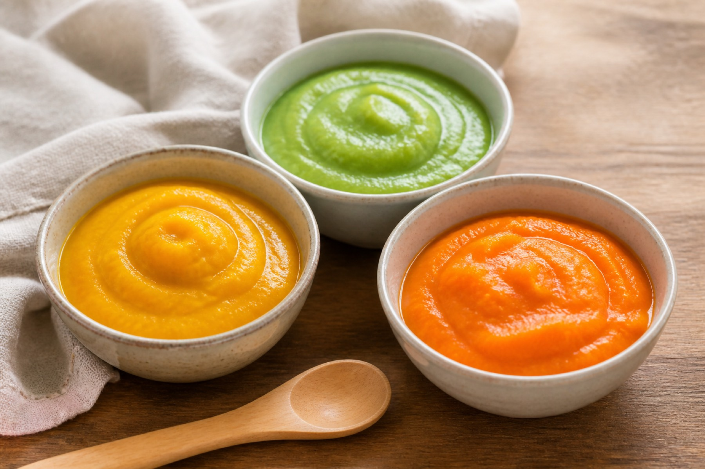
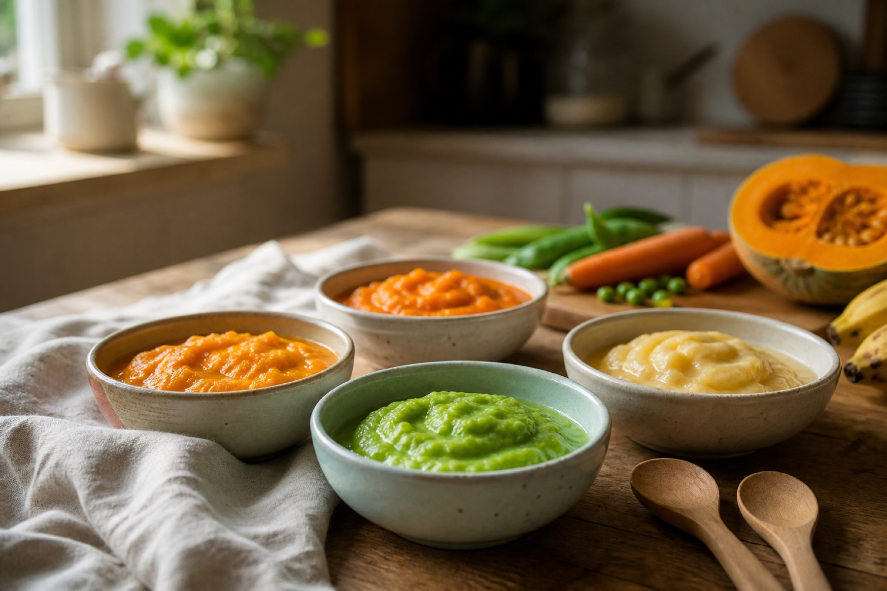
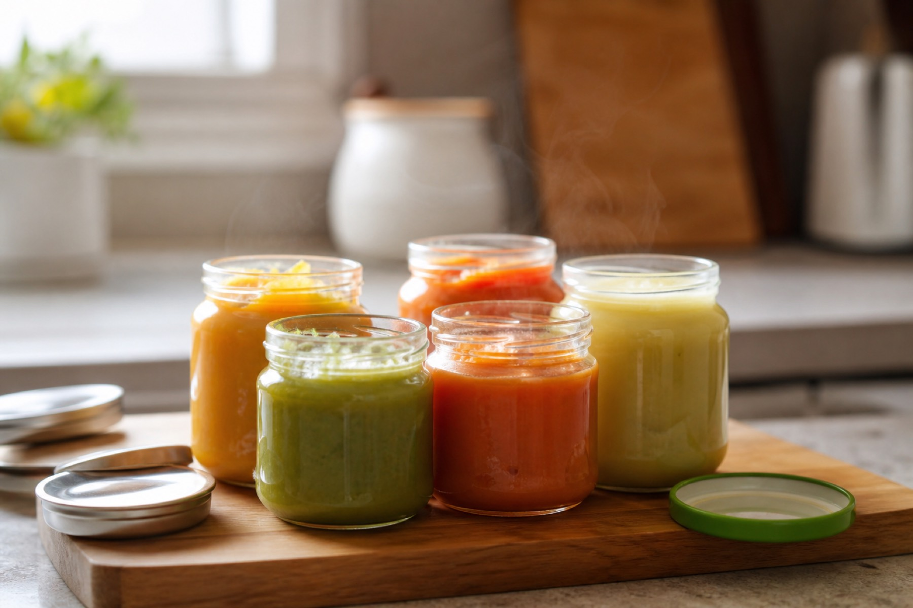
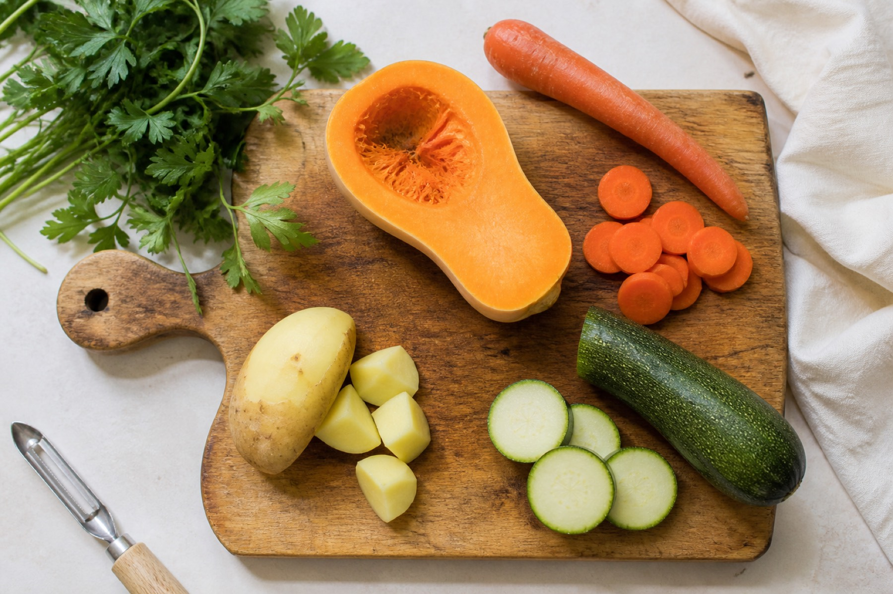
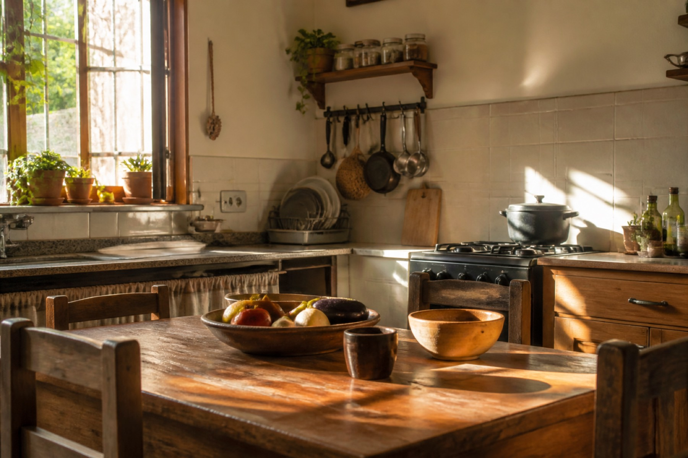

Purés caseros
Verduras y frutas de casa, en textura suave, para acompañar los primeros platos.
Consultar ↗
Comidas caseras · Llavallol
Bety Bebé cocina comidas caseras hechas con amor, pensadas para los más chiquitos. Pedís por WhatsApp y coordinamos en Llavallol.
01 / Carta
Purés, comidas del mediodía y el pedido de la semana. Escribime y armamos lo que necesita tu bebé.

Verduras y frutas de casa, en textura suave, para acompañar los primeros platos.
Consultar ↗
Platos caseros para el mediodía, preparados con el mismo cuidado de una comida de casa.
Consultar ↗
Armamos juntas lo de varios días, para que tengas comida lista cuando la necesitás.
Consultar ↗Contame la edad y lo que estás buscando. Te digo qué hay y cómo coordinar en Llavallol.
Escribime ↗02 / Cómo pedir
Sin formularios. Pedís por WhatsApp y coordinamos el resto en Llavallol.
Contame la edad de tu bebé y si buscás purés, comida del día o un pedido de varios días.
Te cuento qué hay y armamos juntas lo que mejor le viene.
Definimos cómo y cuándo recibís la comida, cerca de casa.
03 / Llavallol

04 / Preguntas frecuentes
05 / Contacto
Escribime ahora y armamos el pedido para tu bebé, en Llavallol.
Hablemos por WhatsApp ↗